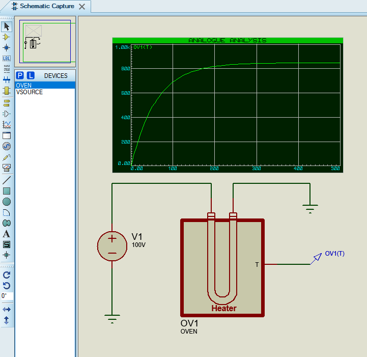
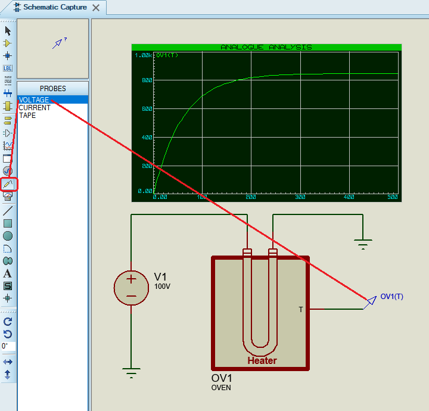
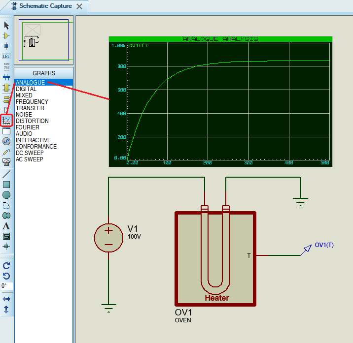
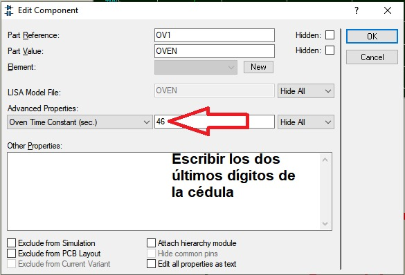
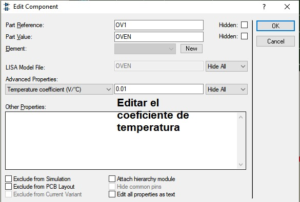
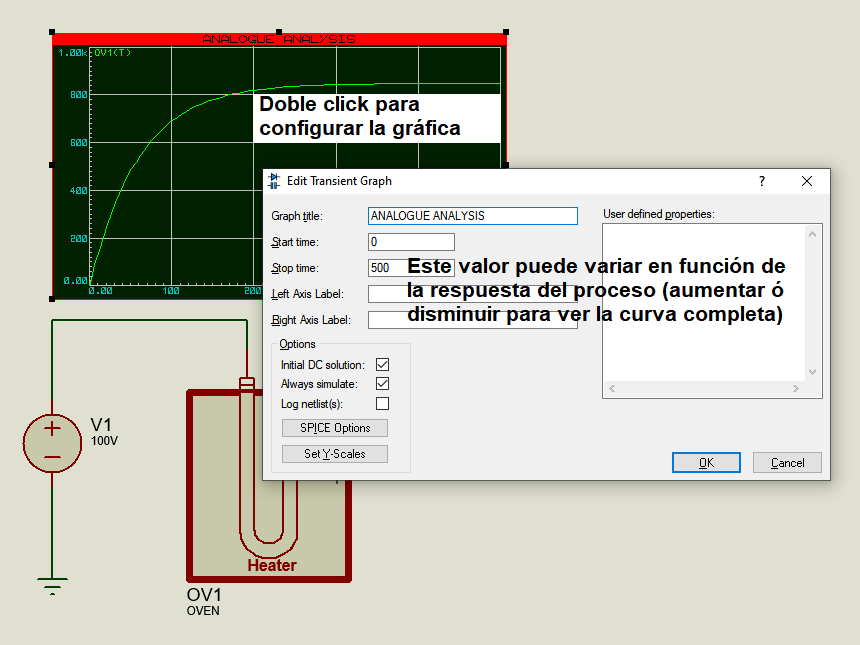
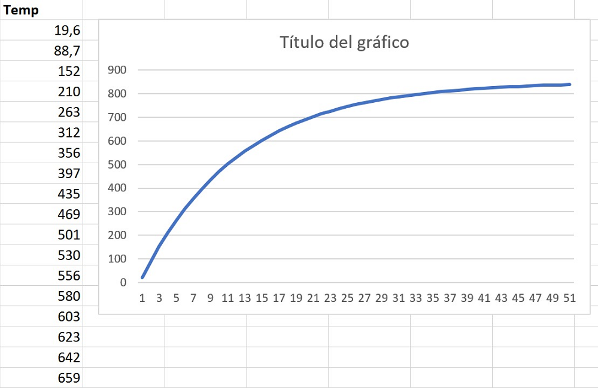

Parámetros de un proceso
Circuito en Proteus utilizando el proceso OVEN (horno)



Parámetros del proceso



Se puede reconstruir la curva de respuesta del proceso utilizando una herramienta externa, por ejemplo EXCEL
